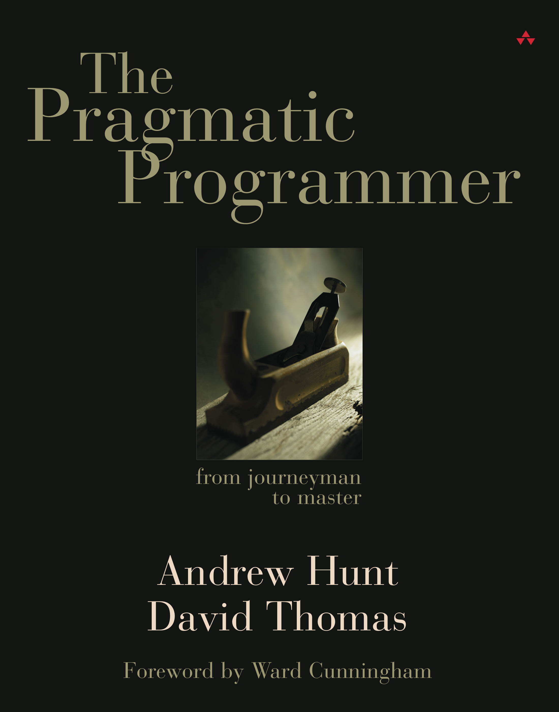
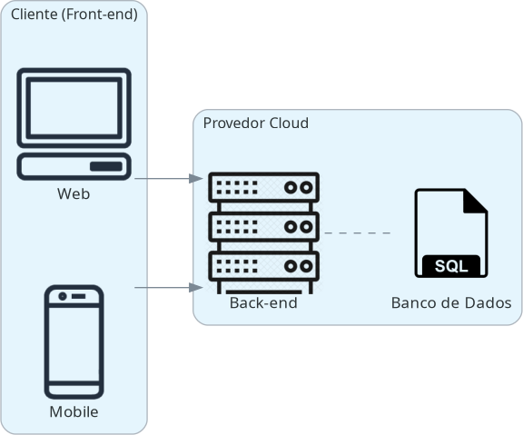
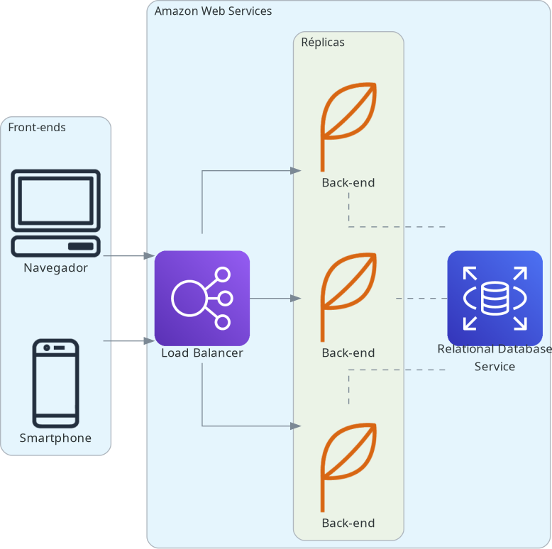
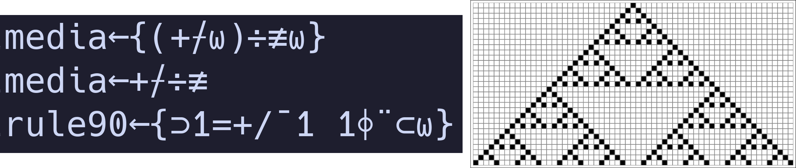
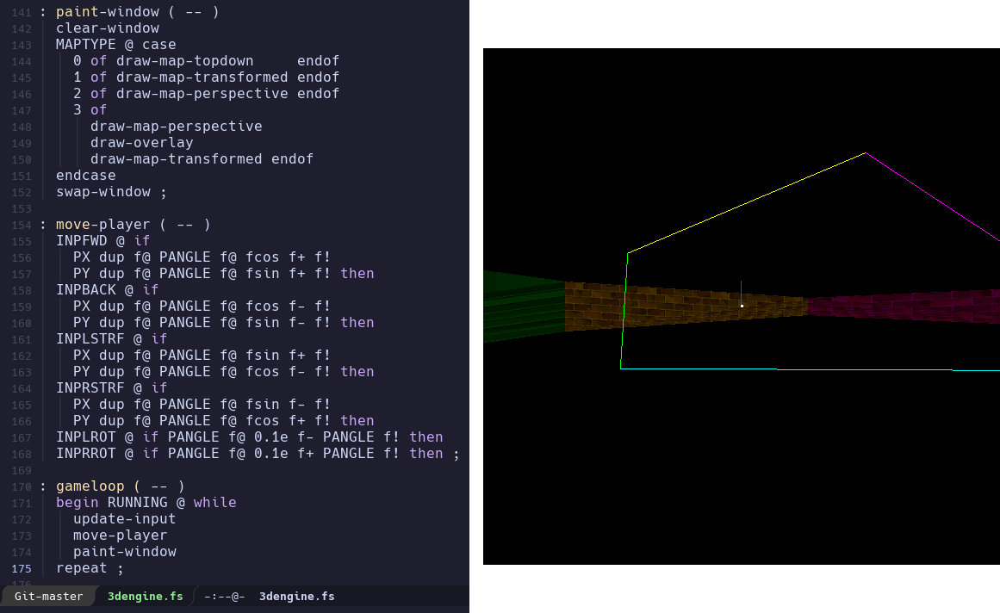
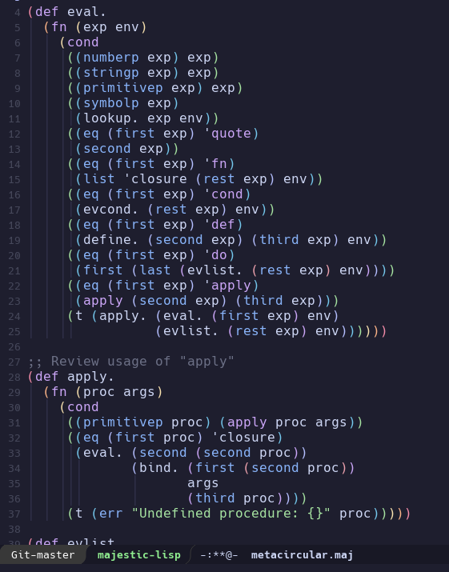

Versatilidade e pensamento lateral no desenvolvimento de software
Lucas S. Vieira
07 de julho de 2023
Tech Lead
Interesses: Inteligência artificial, ciência cognitiva, filosofia da mente, teoria da computação, desenvolvimento de linguagens de programação, desenvolvimento de jogos, programação bare-metal
Co-fundador da Common Lisp Brasil
lisp.com.br
luksamuk https://luksamuk.codes/ luksamuk
Esta apresentação é para quem:

"Aprenda X, Y e Z…"
O mesmo vale para a computação!
Exemplo: Dominar frontend/backend + entender deploy e pipelines
Tô falando grego? Calma que explico…


Código tem três leitores:
Pensamento com orientação ou ponto de vista diferente da norma
É difícil treinar isso, mas sair da mesmice ajuda. Eis três coisas que sempre faço…
Alguns exemplos de linguagens velhas que aprendi:



É pra poucos? Então é pra você!
E o mais importante…
luksamuk https://luksamuk.codes/ luksamuk